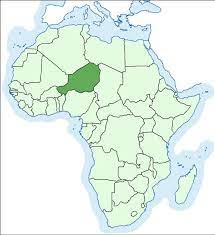
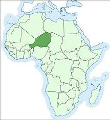

Istorija
Остаци за које се сматра да припадају Нигерсаурусу први пут су откривени током експедиције у Републику Нигер 1965–1972, коју је водио француски палеонтолог Филип Таке, и први пут поменути у раду објављеном 1976. године.[1][2] Иако је био уобичајен род, диносаурус је био слабо познат све док није откривено више материјала других појединаца током експедиција које је водио амерички палеонтолог Пол Серено 1997. и 2000. Ограничено разумевање рода било је резултат лоше очуваности његових остатака, што настаје од деликатне и веома пнеуматске конструкције (испуњене ваздушним просторима повезаним са ваздушним кесама) лобање и скелета, што заузврат изазива дезарткулацију фосила. Неки од фосила лобање били су толико танки да се кроз њих видео јак светлосни сноп. Дакле, нису пронађене нетакнуте лобање или зглобни скелети, а ови примерци представљају најпотпуније познате остатке ребахисаурида.
Nigersaurus su nazvali i detaljnije opisali Sereno i njegove kolege tek 1999. godine, na osnovu ostataka novopronađenih jedinki. U istom članku je takođe nazvan Jobaria, još jedan sauropod iz Nigera. Ime roda Nigersaurus („Nigerski reptil“) je referenca na zemlju u kojoj je otkriven, a specifično ime takueti odaje počast Taketu, koji je prvi organizovao paleontološke ekspedicije velikih razmera u Niger.[4] Holotipski primerak (MNN GAD512) sastoji se od delimičnog dela lobanje i vrata. Materijal udova i lopatica (lopatica) pronađeni u blizini takođe se odnose na isti primerak. Ovi fosili se nalaze u Nacionalnom muzeju Nigera.
Drzava poticanja
 
